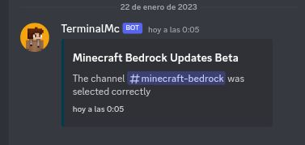
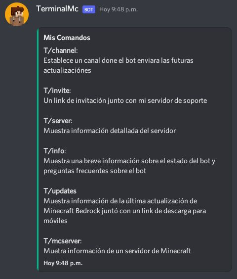
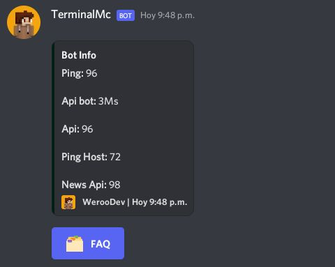
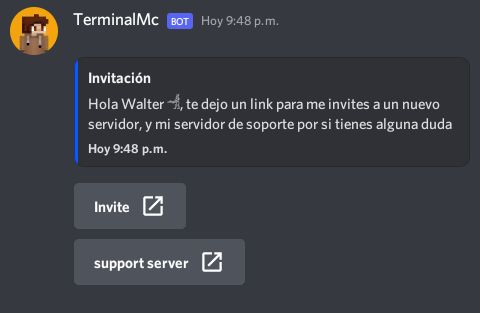
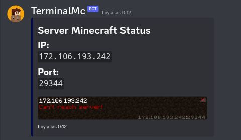
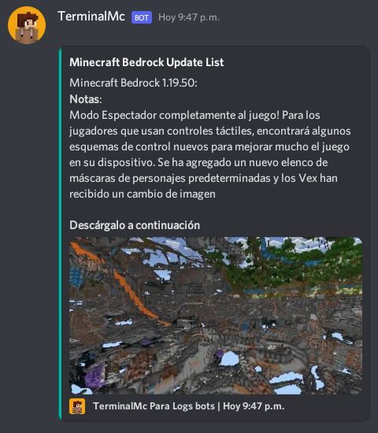

TerminalMc es un bot de discord que brinda información sobre las actualizaciones de Minecraft Bedrock y Java
T/channel:
Este comando sirve para seleccionar el canal donde el bot enviará las futuras actualizaciónes

T/help:
Una breve información sobre los comandos que poseé el bot

T/info:
Muestra el estado del bot y una sección de preguntas frecuentes

T/server
Nuestra información detallada del servidor donde el bot esta
T/invite
Muestra un link de invitación para que puedas añadir al bot a un servidor nuevo 😀

T/mcserver o /mcserver ( este comando esta en proceso de prueba por lo que puede que mo funcione bien )
Muestra información del un servidor de Minecraft proporcionado por el usuario

T/updates:
Mueatra un breve información sobre la última actualización de Minecraft Bedrock juntó con un link de descarga para mobiles
